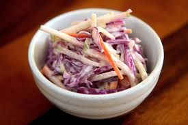

Coleslaw Recipe
Home |
Pulled Pork Recipe |
Baked Beans Recipe

A traditional coleslaw recipe that's ready to make with a bag of ready-made coleslaw mix
and a sweet and creamy homemade dressing that has lemon and horseradish for an added kick.
Ingredients
- 1 cup mayonnaise
- ¼ cup white sugar or to taste
- 2 tablespoons seasoned rice wine vinegar
- 1 ½ tablespoons lemon juice
- 1 tablespoon prepared horseradish
- ½ teaspoon onion powder
- ½ teaspoon dry mustard
- ½ teaspoon celery salt
- ½ teaspoon salt
- ½ teaspoon ground black pepper
- 1 package coleslaw mix
Preparation
- Gather all ingredients.
- Whisk mayonnaise, sugar, vinegar, lemon juice, horseradish, onion powder,
dry mustard, celery salt, salt, and pepper in a large mixing bowl until
sugar has dissolved.
- Fold coleslaw mix into dressing until well combined.